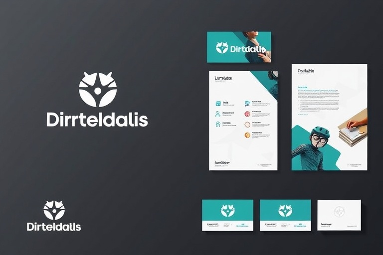

Production Architecture
Production Architecture
Aurora: Real-Time Fraud & Anomaly Detection
A sub-15ms fraud detection pipeline processing 25,000 transactions/sec with a calibrated ensemble model, cutting chargebacks by 44%.
View projectCase Studies
Selected engineering case studies exploring real-time fraud scoring, streaming feature stores, clinical NLP entity extraction, and Lakehouse query acceleration.
Technical index
Case studies illustrate real-world distributed architectures and verified benchmarks.
Production Architecture
A sub-15ms fraud detection pipeline processing 25,000 transactions/sec with a calibrated ensemble model, cutting chargebacks by 44%.
View project Data Engine
Data Engine
A distributed streaming feature store ingesting 1.8B events/day with Apache Spark & Kafka, achieving p99 retrieval latency under 4ms.
View project
Applied ResearchTransformer-based token classification and entity linking across 12M+ biomedical records, achieving 96.8% macro F1 score.
View project Production Architecture
Production Architecture
Sub-30ms hybrid lexical-vector retrieval architecture over 40M enterprise documents with semantic caching and cross-encoder reranking.
View project Data Platform
Data Platform
Hierarchical Bayesian forecasting model coupled with distributed PySpark aggregations, predicting inventory requirements across 450 regional hubs.
View project Platform Architecture
Platform Architecture
Architected a modern Delta Lake storage foundation replacing legacy Hadoop clusters, reducing compute expenditure by 52% and query runtimes by 4.2x.
View projectTry another discipline or reset the filter to see all projects.
Demo content. These are concept projects created for this portfolio template. Replace them with your own case studies, process notes, and outcomes before publishing.